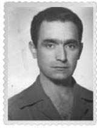

Yüzbaşı Erdoğan
(Tahsin Erdoğan İzgören)
Tahsin Erdoğan İzgören, romanın uzaktan takip ettiğiniz kahramanı. Benim de kahramanım hem de babam.1936-2007 yılları arasında yaşadı. Edebiyatçı bir subaydı. Çok okurdu, binlerce kitaptan oluşan bir kütüphanesi vardı. Çok sevilirdi. Bize dürüstlüğü –kimseyi kandırmamayı– öğretti. Etrafa bakınca şaşkınlıktan bir hâl oluyorum. Allah hepinize böyle bir dost nasip etsin. Çocuklarıma onun yarısı kadar babalık edebilsem yeter. Şimdi memleketinde –Manisa’nın Demirci ilçesinde– yaşıyor. Yine birçok dostu ziyarete gidiyor, sohbetsiz yapamaz çünkü.
